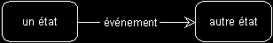
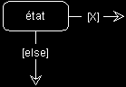
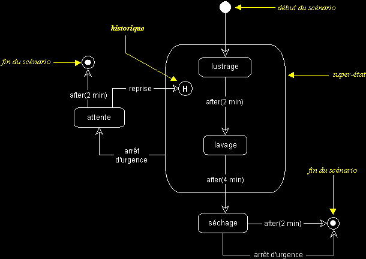
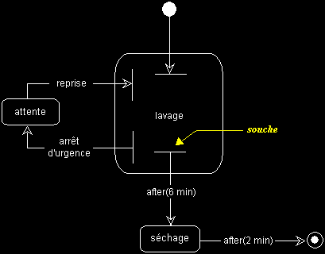
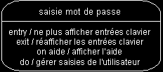
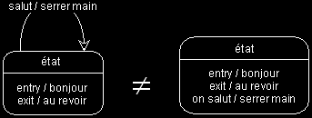
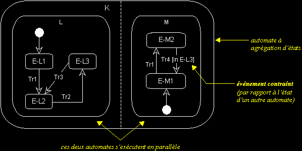
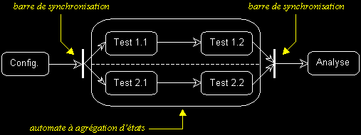
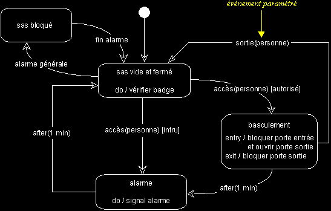

Les vues dynamiques d'UML (suite...)
DIAGRAMME D'ETATS-TRANSITIONS
q
Diagramme d'états-transitions : sémantique
- Ce diagramme sert à représenter des automates d'états finis, sous forme de graphes d'états, reliés par des arcs orientés qui décrivent les transitions.
- Les diagrammes d'états-transitions permettent de décrire les changements d'états d'un objet ou d'un composant, en réponse aux interactions avec d'autres objets/composants ou avec des acteurs.
- Un état se caractérise par sa durée et sa stabilité, il représente une conjonction instantanée des valeurs des attributs d'un objet.
- Une transition représente le passage instantané d'un état vers un autre.
- Une transition est déclenchée par un événement. En d'autres termes : c'est l'arrivée d'un événement qui conditionne la transition.
- Les transitions peuvent aussi être automatiques, lorsqu'on ne spécifie pas l'événement qui la déclenche.
- En plus de spécifier un événement précis, il est aussi possible de conditionner une transition, à l'aide de "gardes" : il s'agit d'expressions booléennes, exprimées en langage naturel (et encadrées de crochets).
états, transition et événement, notation :

transition conditionnelle :

q Super-Etat, historique et souches
- Un super-état est un élément de structuration des diagrammes d'états-transitions (il s'agit d'un état qui englobe d'autres états et transitions).
- Le symbole de modélisation "historique", mémorise le dernier sous-état actif d'un super-état, pour y revenir directement ultérieurement.
Exemple :
Le diagramme d'états-transitions ci-dessous, montre les différents états par lesquels passe une machine à laver les voitures.
En phase de lustrage ou de lavage, le client peut appuyer sur le bouton d'arrêt d'urgence. S'il appuie sur ce bouton, la machine se met en attente. Il a alors deux minutes pour reprendre le lavage ou le lustrage (la machine continue en phase de lavage ou de lustrage, suivant l'état dans lequel elle a été interrompue), sans quoi la machine s'arrête. En phase de séchage, le client peut aussi interrompre la machine. Mais dans ce cas, la machine s'arrêtera définitivement (avant de reprendre un autre cycle entier).

- souches : afin d'introduire plus d'abstraction dans un diagramme d'états-transitions complexe, il est possible de réduire la charge d'information, tout en matérialisant la présence de sous-états, à l'aide de souches, comme dans l'exemple ci-dessous.

q Actions dans un état
- On peut aussi associer une action à l'événement qui déclenche une transition.
La syntaxe est alors la suivante : événement / action
- Ceci exprime que la transition (déclenchée par l'événement cité) entraîne l'exécution de l'action spécifiée sur l'objet, à l'entrée du nouvel état.
Exemple : il pleut / ouvrir parapluie
- Une action correspond à une opération disponible dans l'objet dont on représente les états.
- Les actions propres à un état peuvent aussi être documentées directement à l'intérieur de l'état.
UML définit un certain nombre de champs qui permettent de décrire les actions dans un état :
- entry / action : action exécutée à l'entrée de l'état
- exit / action : action exécutée à la sortie de l'état
- on événement / action : action exécutée à chaque fois que l'événement cité survient
- do / action : action récurrente ou significative, exécutée dans l'état
Exemple :
Remarque :
Attention, les actions attachées aux clauses "entry" et "exit" ne sont pas exécutées si l'événement spécifié dans la clause "on" survient. Pour indiquer qu'elles peuvent être exécutées plusieurs fois à l'arrivée d'un événement, représentez l'arrivée d'un événement réflexif, comme suit :

q Etats concurrents et barre de synchronisation
Pour représenter des états concurrents sur un même diagramme d'états-transitions, on utilise la notation suivante :

Dans l'exemple ci-dessus, l'automate K est composé des sous-automates L et M.
L et M s'activent simultanément et évoluent en parallèle. Au départ, l'objet dont on modélise les états par l'automate K est dans l'état composite (E-L1, E-M1).
Après l'événement Tr1, K passe dans l'état composite (E-L2, E-M2). Par la suite, si l'événement Tr2 survient, K passe dans l'état composite (E-L3, E-M2). Si c'est Tr4 qui survient, M ne passe pas dans l'état E-M1, car cette transition est contrainte par l'état de L ("[in E-L3]").
Dans l'état composite (E-L3, E-M2), si Tr3 survient, K passe dans l'état composite (E-L2, E-M2). Si c'est Tr4 qui survient, K passe dans l'état composite (E-L3, E-M1). Et ainsi de suite...
Attention : la numérotation des événements n'est pas significative. Pour synchroniser les sous-automates d'une agrégation d'états, il faut contraindre les transitions, comme dans l'exemple ci-dessus ("[in E-L3]").
On peut aussi utiliser un symbole spécial : "la barre de synchronisation".
- La barre de synchronisation permet de représenter graphiquement des points de synchronisation.
- Les transitions automatiques qui partent d'une barre de synchronisation ont lieu en même temps.
- On ne franchit une barre de synchronisation qu'après réalisation de toutes les transitions qui s'y rattachent.

q Evénement paramétré
UML permet aussi de paramétrer les événements, comme dans l'exemple suivant :

q Echange de messages entre automates
Il est aussi possible de représenter l'échange de messages entre automates dans un diagramme d'états-transitions. Cette notation particulière n'est pas présentée ici. Veuillez vous référer à "l'UML notation guide".
|